About me
I’m a Unity developer based in Auckland, New Zealand, working across games, VR simulation, and interactive training software. Over more than a decade of professional C# development, I’ve shipped projects across mobile, desktop, and head-mounted platforms, but the thread that runs through all of my work is a belief that interactive systems can make complex ideas feel intuitive.
I’m drawn to the point where design and development overlap: where responsiveness, clarity, and feel shape whether something is merely functional or genuinely engaging. In games, that means building experiences with enough craft and momentum to keep players invested. In training software, it means creating systems where learning happens naturally through doing, exploration, and feedback.
I like getting ideas into a playable state early, because there is often a real gap between the idea of something and the reality of it. For me, iteration is where good work emerges: testing, refining, and pushing toward software that feels polished, considered, and worth people’s time.
I’m a software engineer based in Auckland, New Zealand, working across agentic AI systems, interactive software, and real-world product engineering. Over more than a decade of shipping production software across C#, TypeScript, and Python, I’ve built everything from games and VR training systems to local-first LLM tools, retrieval pipelines, and agents that support real workflows end to end.
The thread that runs through my work is a belief that good software should make complexity feel manageable. I’m especially drawn to systems that sit at the overlap of design, engineering, and behaviour: where the challenge is not just getting a model or feature to work, but shaping it into something clear, dependable, and genuinely useful.
In AI work, that means building more than a chat interface. I’m interested in the engineering around the model: tool design, retrieval, structured outputs, evals, orchestration, latency, and the practical realities of integrating AI into products that people actually use. A recent example is Porter, my local-first job application agent, which combines structured parsing, RAG over my own career corpus, and a Playwright sidecar that can carry tasks through in the browser.
I like getting systems into a working state early, because there’s usually a gap between what seems convincing in theory and what holds up in practice. For me, good work comes from iteration: testing, refining, and building toward software that feels considered, resilient, and worth relying on.
What I'm doing
-
AI Development
Agentic AI, hands-on. AI-driven NPCs for VR training at SkillsVR. An OpenClaw home-lab of self-hosted LLMs running agentic workflows — model hosting, prompt and tool design, integration, and shipping features end-to-end.
Years of tool-and-pipeline craft now building agent pipelines and automation that actually ships.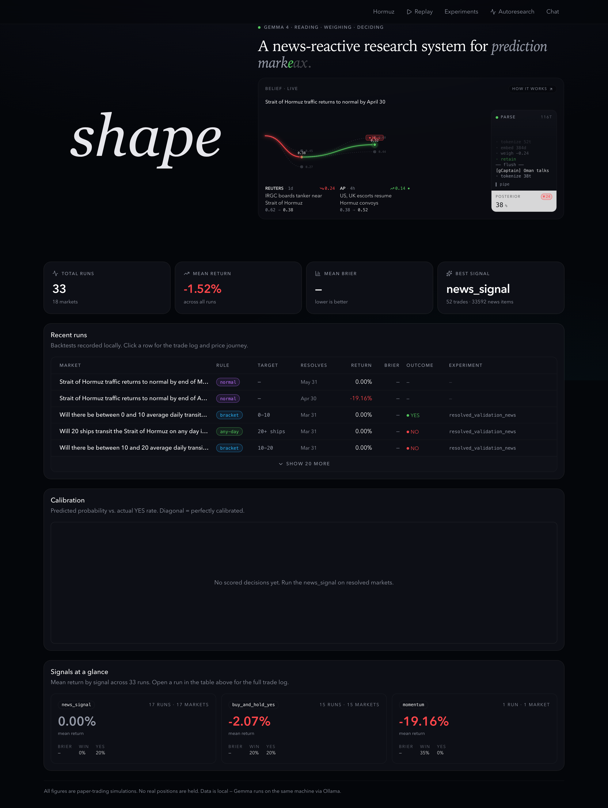
shape · home One SQLite file runs the whole stack — 15 tables tracking markets, prices, news, backtests, and per-tick model reasoning. 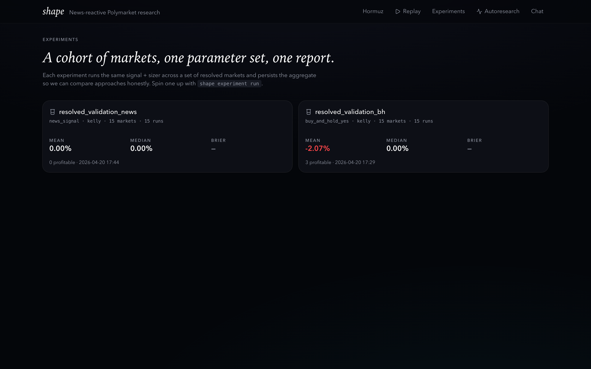
shape · grounded chat Nine read-only SQLite tools the model can call. Every tool call is visible; every answer traces back to a real row. 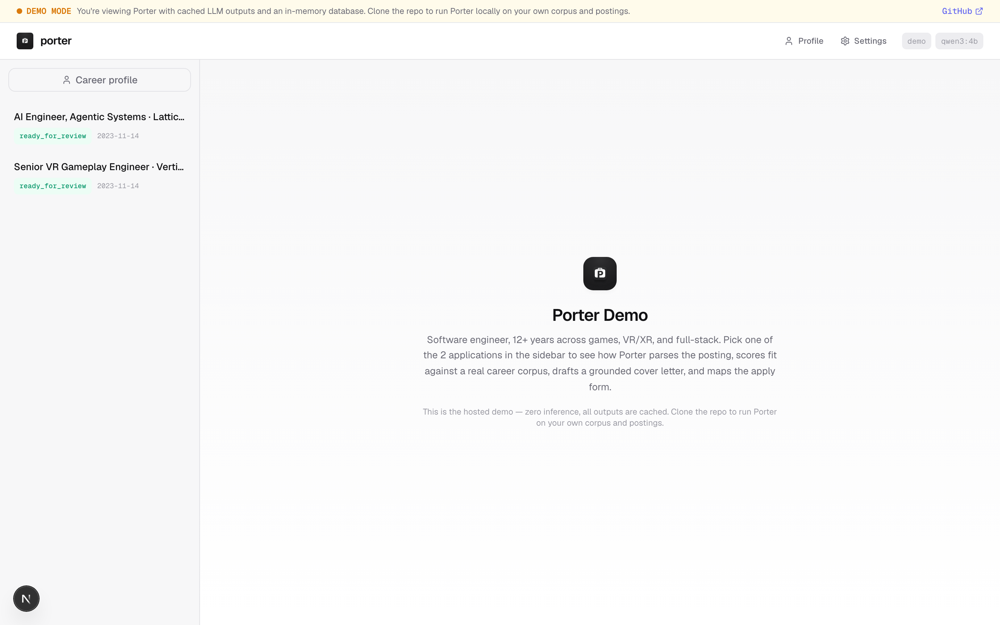
Porter · macOS queue A local-first jobs agent. A Playwright sidecar clicks through Greenhouse, Lever, and Workday forms — not just drafting, actually applying. 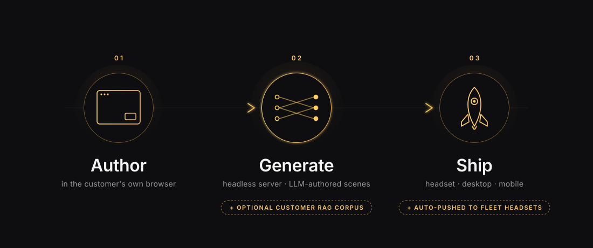
GenerateVR · pipeline An LLM authors the scenario; an optional RAG step grounds it in the customer’s own SOPs so output stays on-brand and compliant. Real AI features live or die in the scaffolding. Retry policies for when a model fumbles mid-tool-call. Eval harnesses that catch regressions before a release does. Structured-output guards so a bad decode doesn’t topple the UI downstream. A hundred tiny product decisions that turn a probabilistic blob into something a person actually trusts. That’s the layer I love — the bit between the model and the user, where product-thinking happens.
Local models when privacy or latency calls for it; frontier models when they don’t. The choice becomes engineering rather than hype. What I chase is the feature that’s still up the next morning — still making the same promise, still answering the same question, still holding up to the Friday-afternoon edge case nobody planned for.
See it in action -

Desktop & Mobile Apps
Years building and maintaining cross-platform apps — from multi-tenant offline-first applications, companion mobile apps, and the behind-the-scenes automations that run every day. Lots of experience building, shipping, and maintaining the full stack.
Porter · macOS Native menu-bar agent with RAG over your own resume and writing samples. Runs locally — nothing about the job hunt leaves the machine. 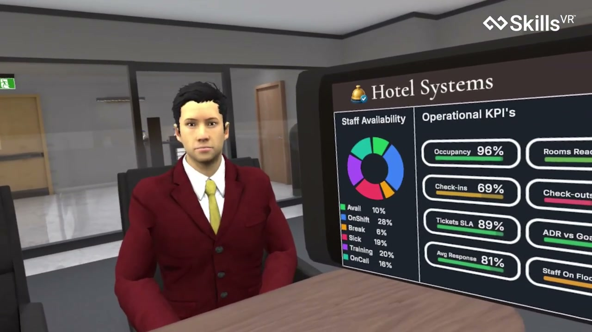
Hospitality Passport · Quest Front-of-house training built around interactive props and NPC decision points, deployed across managed Quest fleets. 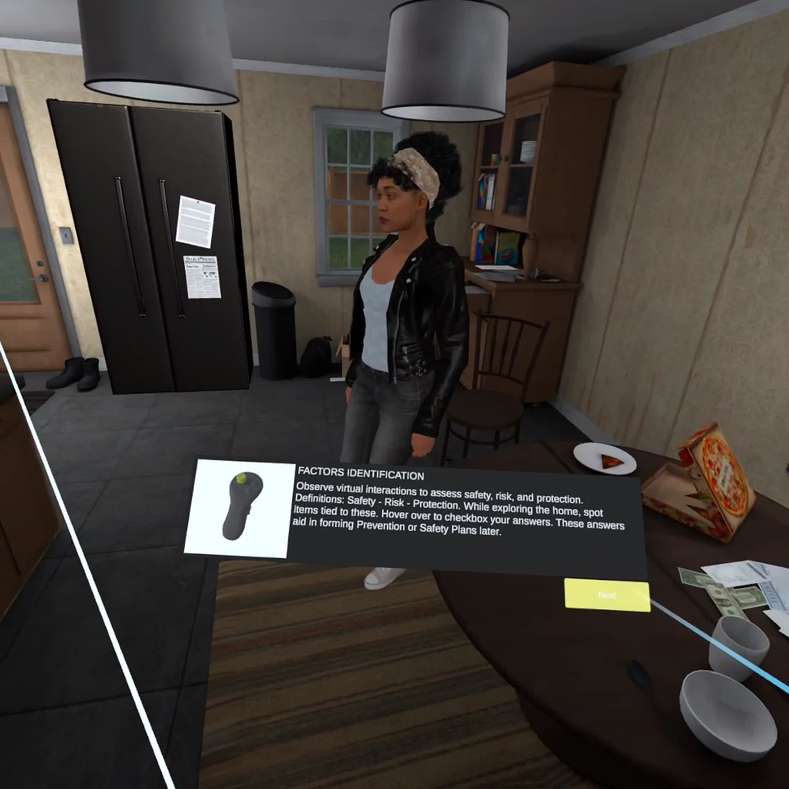
Child Welfare VR · Quest A furnished home in VR. Social-work trainees walk room by room, flagging safety and protection factors before each decision. 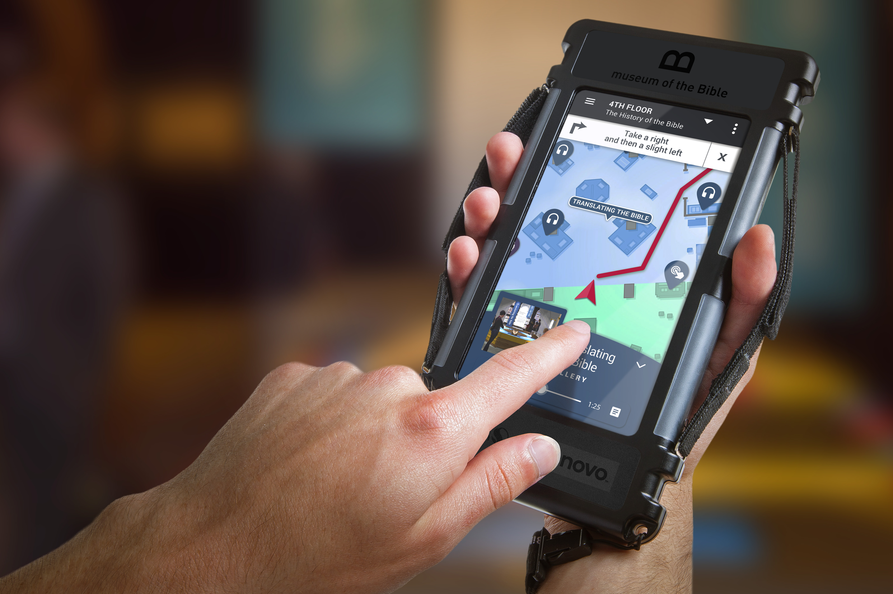
Museum of the Bible · AR-adjacent A mobile companion for kids — MBOT the robot guide leads story-missions and collects helper bots between exhibits. Cross-platform apps earn trust slowly. The right offline behaviour when signal drops. A sync that recovers cleanly when it returns. A multi-tenant boundary you only notice when someone pushes it hard. These are the unglamorous parts that decide whether a product is still in daily use three years after launch — and they’re the parts I like owning.
I’ve spent years in that corner of the craft: architecture, implementation, polish, and the patient maintenance work that never makes a changelog. A jobs-agent in a dock, training passports on managed headset fleets, a children’s companion wandering a museum — different surfaces, the same quiet bar for resilience.
See it in action -
AI Development
Agentic systems that do real work.
I build practical AI features end-to-end: tool use, structured prompts, evaluation loops, self-hosted models, and workflows that connect models to real products. From AI-driven behaviours in training software to internal assistants and automation, I care about systems that are useful, stable, and shippable.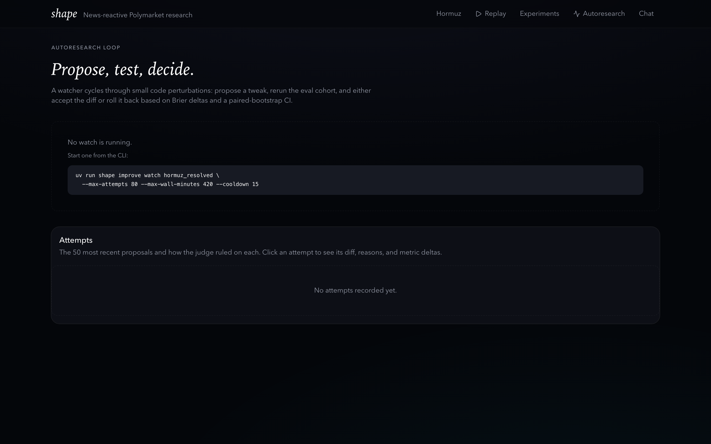
shape · auto-research Gemma turns Strait-relevant headlines into probability estimates; a no-lookahead backtester replays the decision and scores its calibration. shape · experiments Fractional-Kelly sizing (¼), vol-scaled, hard-capped. Fat-tailed prediction errors taken seriously. 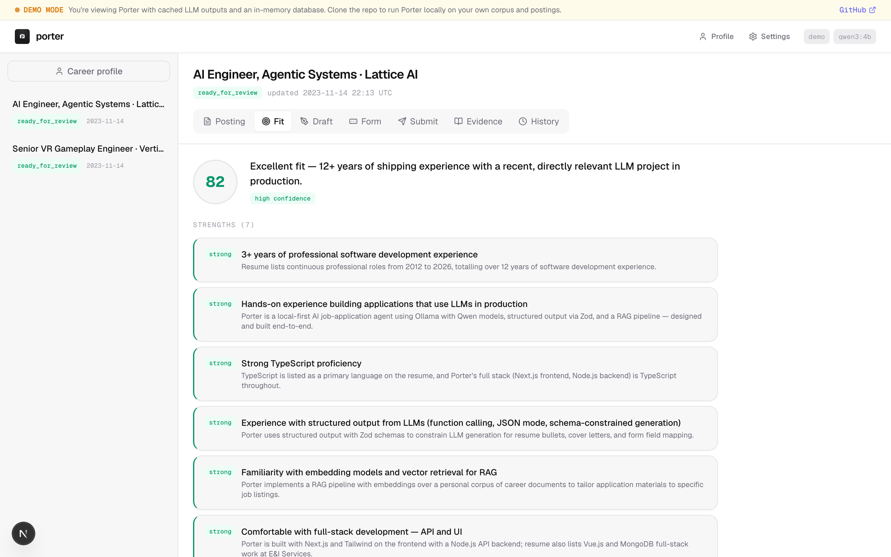
Porter · tailoring Next.js + Ollama/Qwen parses postings into requirement trees, then scores fit with citations back into your own corpus. GenerateVR · pipeline Structured-output prompts author scenario, dialogue, and interactable wiring; optional RAG over customer SOPs keeps it grounded. What I care about sits between the model and the user. Retry policies for when a tool call fumbles. Structured-output guards so one bad decode doesn’t topple the UI. Eval harnesses that catch regressions before a release does. A hundred small product decisions that make an AI feature feel like a tool a person trusts rather than a toy that occasionally surprises them.
Local models where privacy or latency call for it; frontier models where they don’t. The choice becomes engineering rather than hype. The work I want is the work still running the next morning — still passing the same evals, still answering the same questions with the same reasoning a human can check.
See it in action -
Desktop & Mobile Apps
Production software, not just prototypes.
Years building and maintaining cross-platform applications across desktop and mobile — including offline-first systems, multi-tenant apps, companion tools, and the infrastructure behind them. Comfortable owning architecture, implementation, polish, and the messy parts that keep products running.Porter · macOS Full eval harness with cached runs, stability scoring, and a reproducible demo mode for interview walkthroughs. 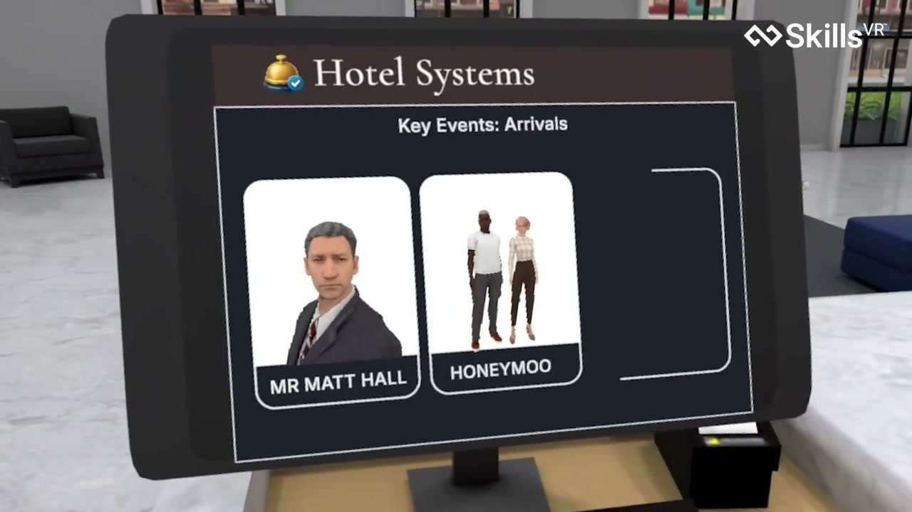
Hospitality Passport · dialogue ElevenLabs TTS pipeline designed so writers can iterate NPC lines and barks without code changes. 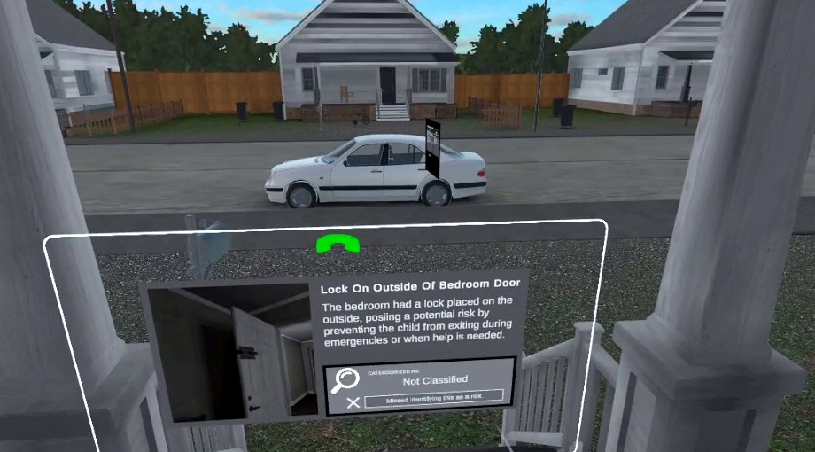
Child Welfare VR · branching A pointer-driven interview presents realistic response choices in-world. Each decision reshapes the scenario’s direction. Museum of the Bible · routing Kid’s itinerary synced to an adult’s — age, timing, and interests reshape the museum route on the fly. I build for the devices that leave the office. A headset strapped into a hospitality trainee’s kit. An iPad a field engineer unlocks one-handed on a windy substation. A laptop that never quite sits on a desk. Offline-first data shapes everything about those apps — capture, sync, conflict resolution, and the UI states you only notice when you’re somewhere with two bars of signal.
The apps above are all still running: different form factors, same quiet bar for resilience. That patient maintenance work — the kind that lets a product be reliable three years after launch — is the part of app craft I actually enjoy.
See it in action -
Pipelines & Automation
The plumbing that makes AI reliable.
Good AI products need more than prompts. I build the surrounding systems: repeatable pipelines, eval harnesses, telemetry, deployment flows, caching, and operational tooling that make AI features easier to ship, observe, and improve over time.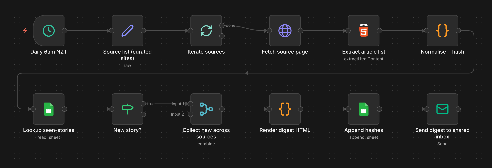
Furlong · n8n graph Self-hosted 12-node pipeline: scrape curated NZ racing sources, dedupe against a rolling SHA-1 index, render and send the morning email. 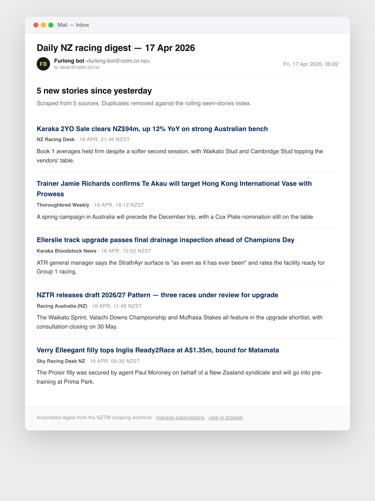
Furlong · 6am digest Rendered by a custom Code node. SMTP fires at 6am NZT, every day, for years, with no cloud spend and no one chasing it. 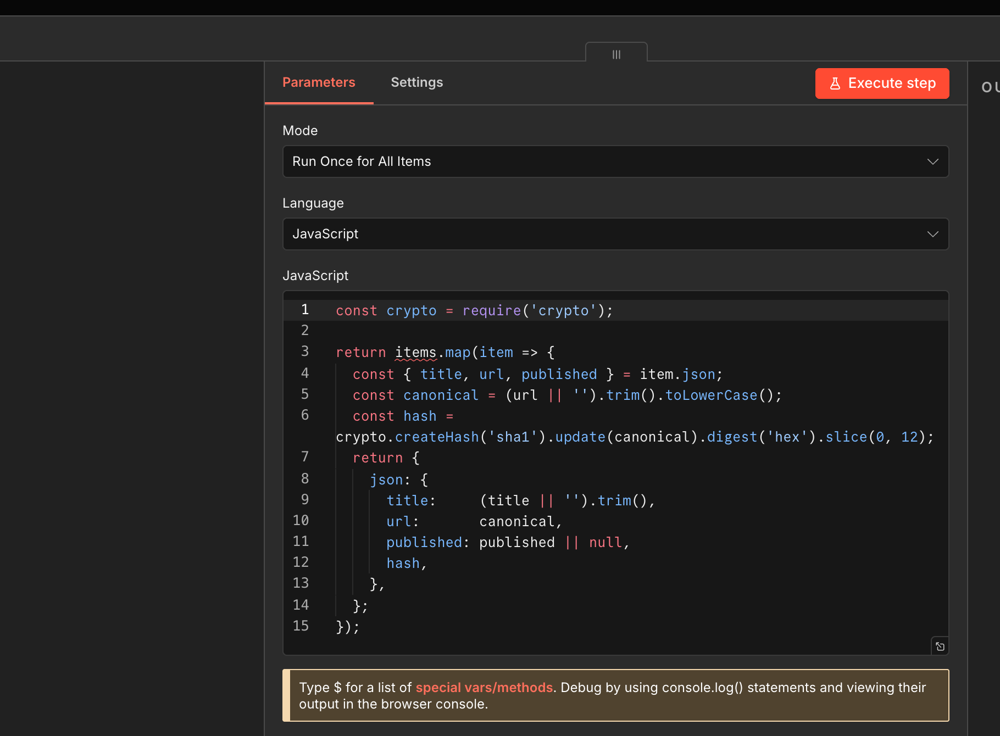
Furlong · code node The normalisation stage — HTML extraction, content scrubbing, and SHA-1 hashing before the dedupe index check. 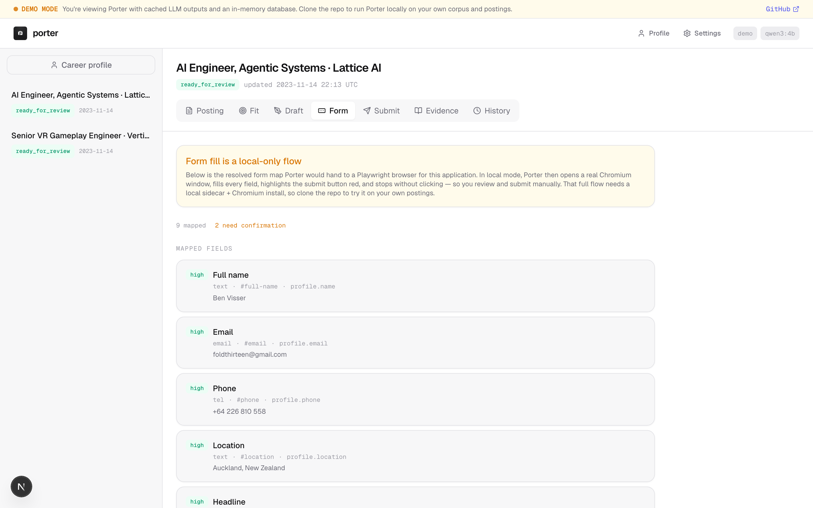
Porter · agent pipeline Structured-output Ollama pipeline: posting → requirement tree → fit score → tailored cover letter, closed-loop and local. Shipping AI features takes a lot more than prompting. Repeatable pipelines. Eval harnesses that notice when a model gets worse. Caches that keep costs sane. Structured-output guards so downstream code doesn’t fall over on a bad decode. Telemetry that tells you what users actually got. I’m the person who enjoys the plumbing — the part without which a demo never graduates into a product.
A favourite example is Furlong. A self-hosted twelve-node n8n workflow that scrapes curated NZ horse-racing sources, dedupes them against a rolling SHA-1 hash index, and lands a daily digest in a shared inbox at 6am. Years of uninterrupted runs, zero cloud spend, nobody chasing it. Small, reliable, explainable — the shape I aim for whenever I build automation.
See it in action -
Reporting & Monitoring
Systems that surface what matters.
Automated reporting, performance dashboards, scheduled summaries, and lightweight monitoring that keep teams informed without manual effort. I like building software that not only runs, but also explains how it’s running.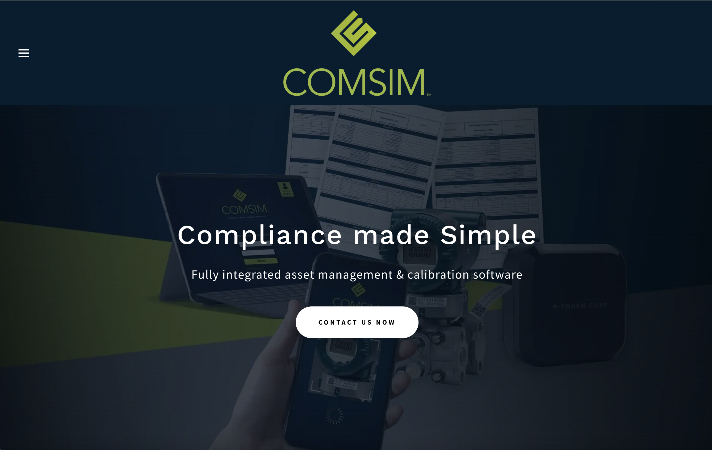
Comsim · field view The offline-first view electrical engineers use on-site. Syncs to the cloud the moment signal comes back. 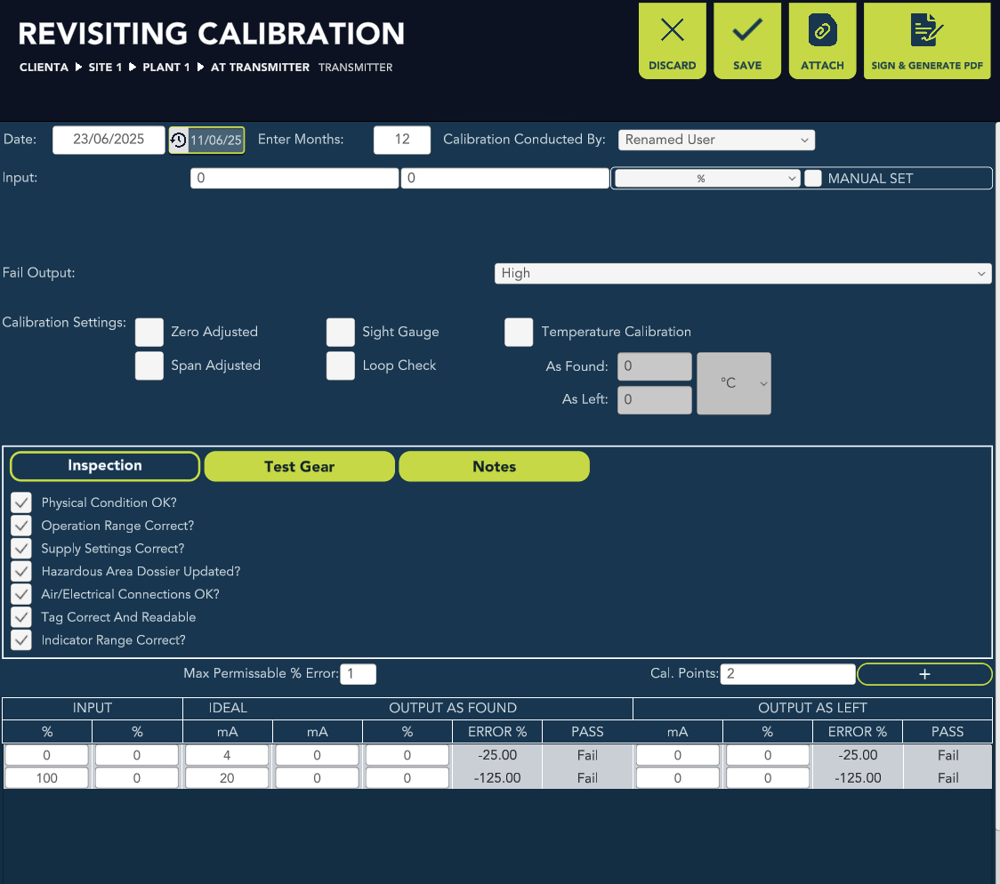
Comsim · one-screen capture Notes, photos, and calibration data on one surface, designed to stay usable while wearing work gloves. 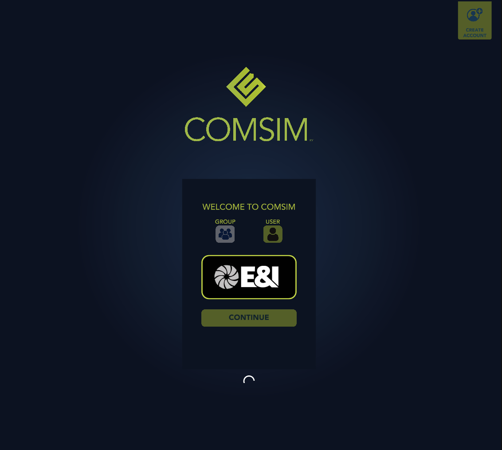
Comsim · telemetry Instrumentation behind twelve enterprise deployments: which screens drag, which steps fail, which days slow the crew. Furlong · daily digest Scheduled reporting in its simplest form — one 6am email that answers ‘anything I need to know?’ without anyone chasing it. Most products don’t have a visibility problem in theory. They have one in practice, because nobody built the instrumentation layer. I like being the person who does. On Comsim that meant usage analytics, error reporting, user-flow traces, and bottleneck hunting — the team stopped guessing which screens dragged or where field engineers got stuck, because the telemetry told them.
Pair that instinct with scheduled digests and lightweight dashboards and the work starts explaining itself. The Furlong pipeline is the simplest version of the shape: one email, every morning, answering ‘anything I need to know?’ without anyone asking.
See it in action -
VR Development
End-to-end VR simulations and games. Prototyping, intuitive interaction design, multiplayer support and smooth performance on Quest, Pico, and PC-VR.
Versed in Open-XR, the PICO SDK and platform-specific optimization for immersive, cross-device deployment.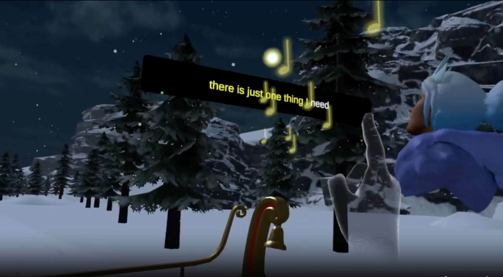
VR Singing Club · Quest Social karaoke with a node-based dialogue system — designers wire NPC behaviour and TTS without touching code. 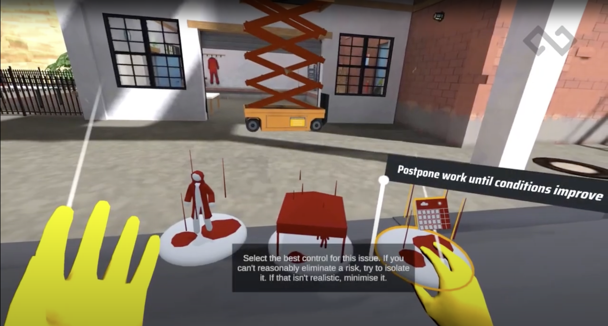
Working at Heights Immersive height-safety training with competency mapping aligned to NZQA standards. Non-repetitive scenario flow. 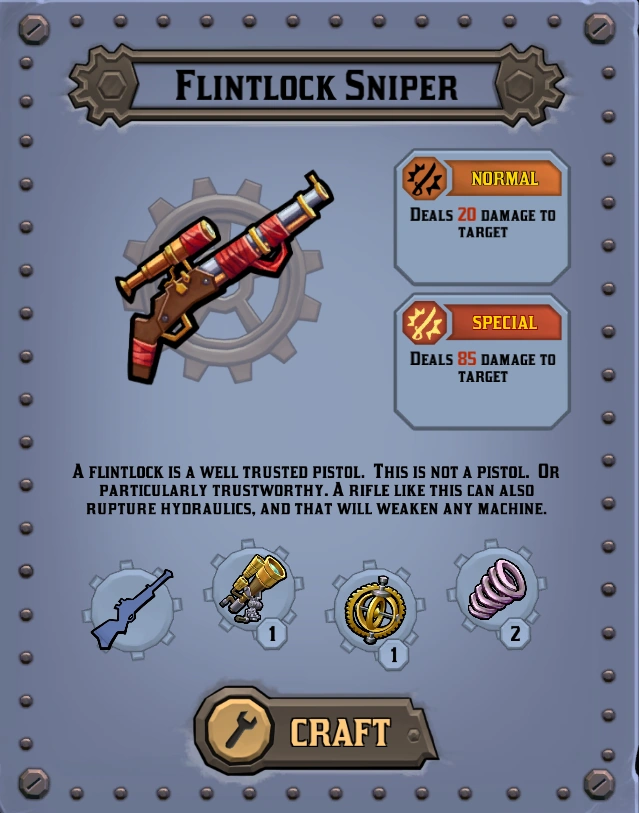
The Aetherlight · MMORPG Cross-platform combat with team-synergy mechanics and combo chains — shipped across mobile, PC, and VR. Hospitality Passport · Quest In-world tablet UI, visual guidance, and outcome tracking for scalable, repeatable training content. The goal in VR is a moment nobody talks about enough — the three or four seconds when the headset stops being a headset and the room is just the room. Everything ladders up to that: frame budgets on Quest, hand feel you can tune by a millisecond, audio spatialisation that tells you where someone is standing without them saying a word, the quiet locomotion choice that doesn’t make anyone queasy.
I’ve worked across the whole pipeline — interaction design, multiplayer networking, performance, and the platform quirks that decide whether that moment lands. From immersive safety training to social karaoke to a cross-platform MMORPG, the craft is the same: remove anything that reminds the person they’ve got a plastic box on their face.
See it in action -

Game Development
Full-cycle game development—from playable prototypes to polished, multi-platform releases—delivering engaging mechanics, striking visuals, and seamless performance.
A ton of independent releases, an aeon of experience working as part of a larger team.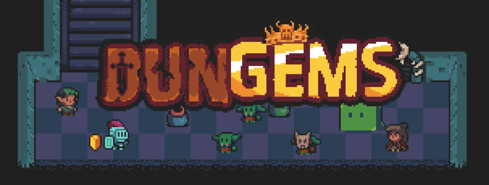
Dungems · reverse-dungeon Lay traps, carve tunnels, train monsters — then watch AI heroes try to beat your design. 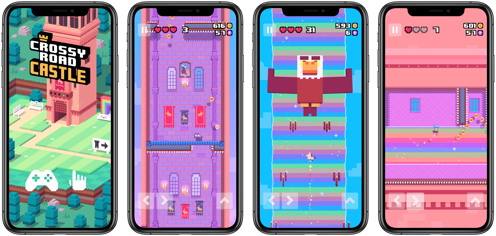
Crossy Road Castle · Apple Arcade Tower-climber with seamless 4-player couch and online co-op across iOS and Android. Launched on Apple Arcade. 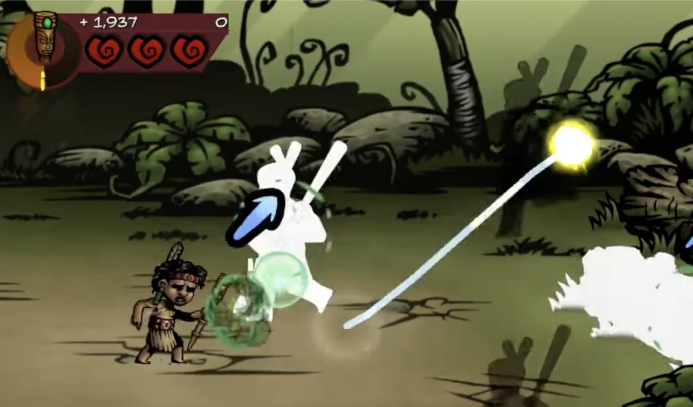
Huia · narrative Hand-painted Aotearoa bush and journal entries weaving Māori folklore and ecology — piecing together the huia’s lost song. 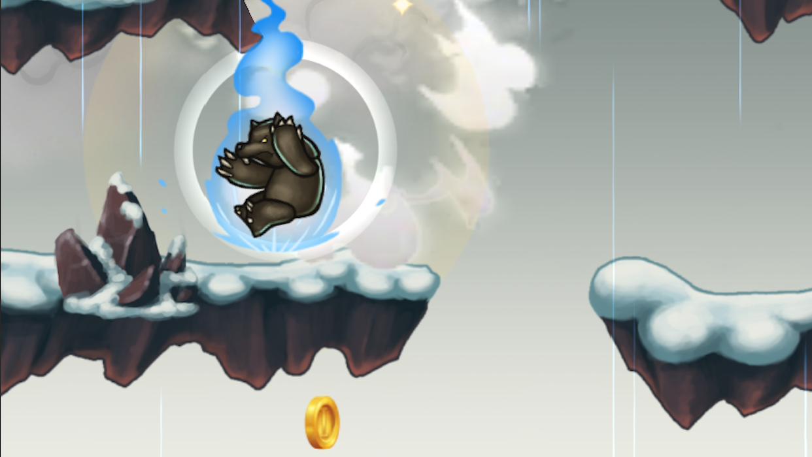
Tumbly Beasts · physics runner Procedurally generated endless-runner levels with Unity Ads, Facebook sharing, and an iMessage sticker pack. What I keep coming back to is the feel. The half-second of hang time that makes a jump land weighty. The thirty frames of anticipation before a monster lunges. The physics that make a crowd of little creatures read as alive instead of as objects. Readable mechanics, striking visuals, performance that holds up on whatever the player is actually holding.
I’ve shipped on Apple Arcade, inside independent studios, and across iOS, Android, PC, and console. What still feels worth chasing is the bit the player never explicitly notices — but can tell, instantly, when it’s missing.
See it in action
Projects
Worked With
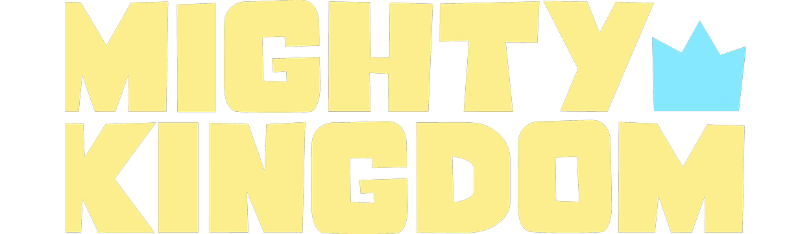

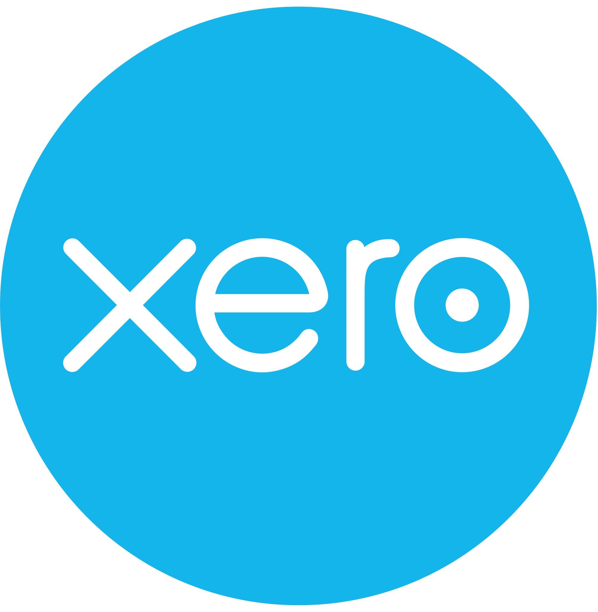
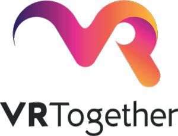
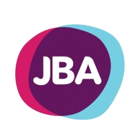
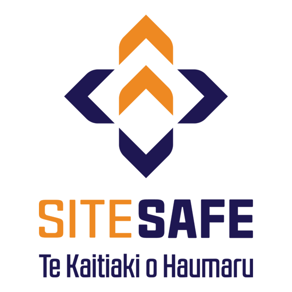
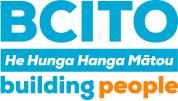
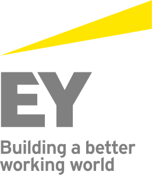